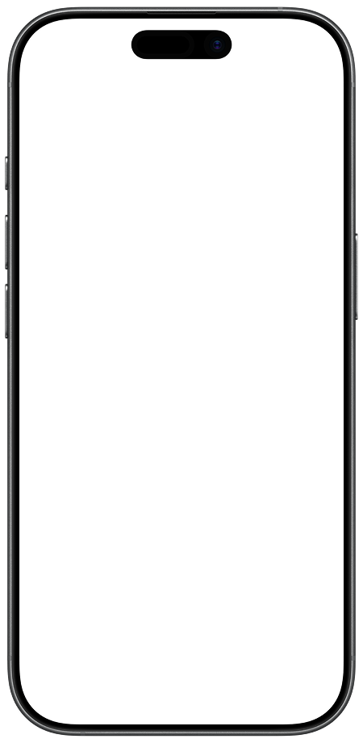
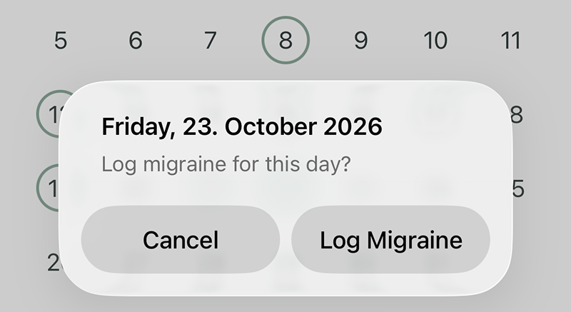
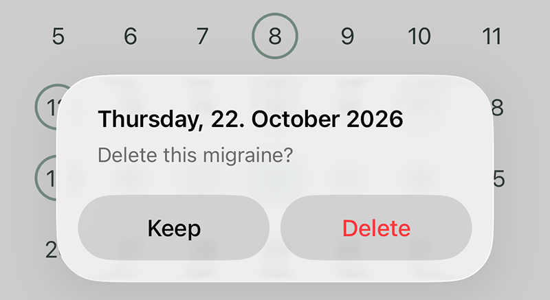
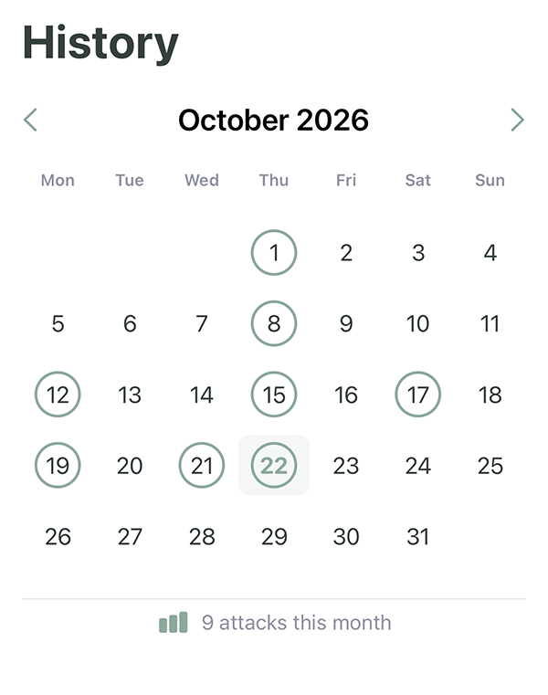
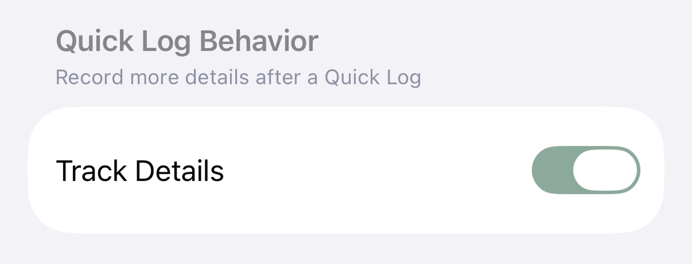
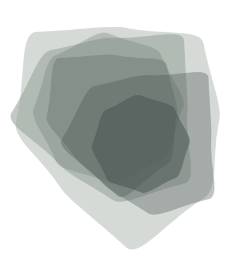
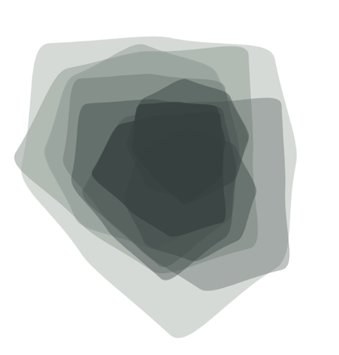
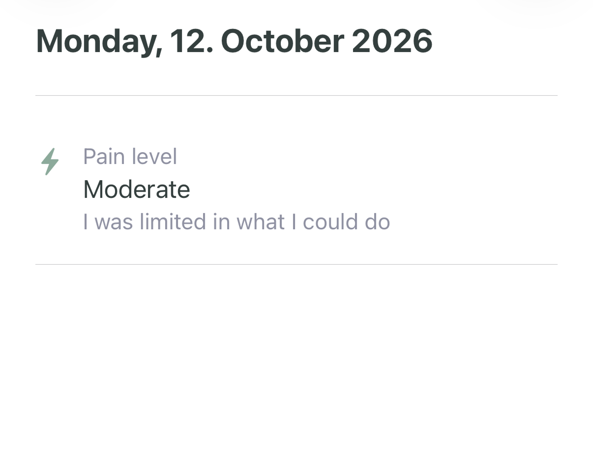
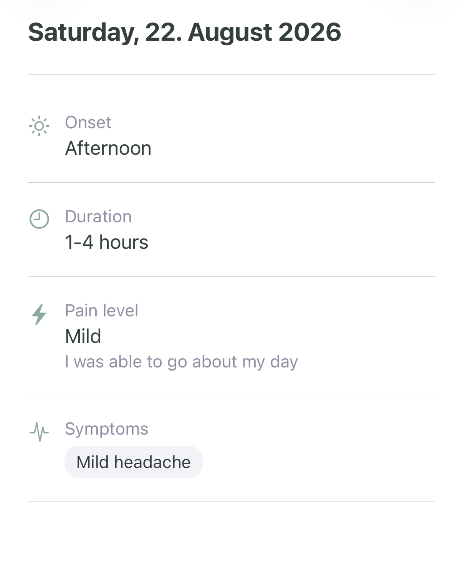
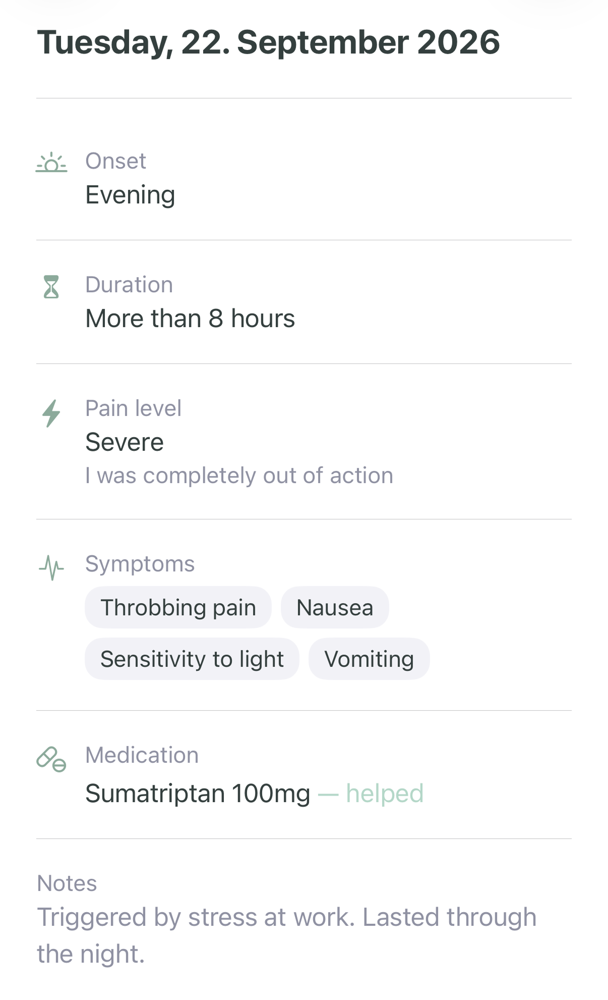

Set up in advance
Choose relevant symptoms and medications, and add your own options in Settings.
Designing migraine tracking for moments when tracking is hardest.
A migraine logged in a single tap. No forms, no extra decisions.

There are plenty of ways to track migraines. I just wasn't using them.
I wanted to keep a reliable record of my migraine days for medical appointments, but struggled to keep up with it. Visually overwhelming apps made it even less appealing, sometimes to the point where I avoided opening them altogether.
During a migraine, pain, sensitivity to light, and difficulty concentrating can make interacting with a screen particularly demanding. And the longer tracking is put off, the harder it becomes to reconstruct when and how often migraines occurred.
What is the smallest realistic action that still creates value?
The first decision was to separate recording a migraine from describing it.
The app opens directly to one clear action. A single tap records the occurrence and gives immediate feedback. No forms, no additional information required. In its simplest mode, that's the entire experience.
Even a date on its own can be useful. Each logged migraine adds to a monthly overview, making it easier to see when and how often attacks occurred.
Directly from the calendar



The original idea was simple: record migraine days, nothing more.
I kept coming back to the value of additional information. Severity, symptoms, medication, and duration could be useful for medical appointments. But adding those options risked bringing back exactly the complexity I wanted to avoid.
My current approach is an optional Detail Mode, enabled through Settings. The one-tap entry stays the same, while additional questions become available for anyone who wants to record more.

That separation comes with a trade-off: keeping Detail Mode out of the way also makes it easier to overlook. I'm still exploring how best to introduce it.
Detail Mode adds a step-by-step flow after a migraine has already been saved.
Onset, severity, duration, symptoms, medication and notes can be added or skipped. I wanted people to feel free to add more, without feeling they had to.
Severity is described through its impact on everyday activities, rather than numbers alone.


A long list of every possible symptom or medication would bring the visual overload straight back.
Instead, people can choose which options are relevant to them. Future entries show that smaller selection, rather than asking them to scan the full list each time.
Choose relevant symptoms and medications, and add your own options in Settings.
Customize your selections directly within the Detail Flow, without leaving your entry.
Setup takes effort. I still need to test whether the reduced effort during future entries justifies that initial step, and which options should be available by default.
Not every migraine entry needs the same amount of detail.
The detail view adapts to what was actually recorded. Whether someone adds one detail or several, only the available information appears. No empty fields, no reminders of what was skipped.
I wanted a sparse entry to feel just as complete as a detailed one.
Different amounts of detail



Recording a migraine is only half the challenge.
I've brought my own migraine records to appointments before, only to have them barely looked at.
The next challenge is making that information easy to review during a consultation. I've experimented with transferring recorded data onto an existing headache calendar, but I'm still considering whether a familiar format or a more focused, custom summary would work better.
I started building directly in SwiftUI, exploring the concept, designing the interface and refining interactions as the app took shape.
Although I have a background in iOS development, I wanted to use this project to spend more time on product and design decisions. I used Cursor for code generation and ChatGPT to explore technical approaches, review solutions and troubleshoot issues.